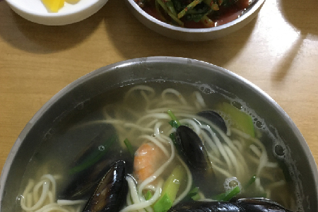
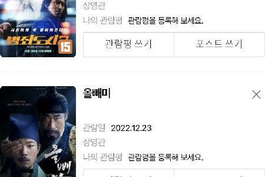
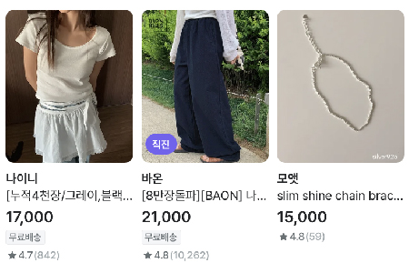

 |
선호하는 음식 종류 저는 소화가 잘 되고 속이 편안한 한식을 좋아합니다. 그중에서도 해산물이 들어간 음식을 선호하며 매운 음식 또한 좋아하는 편입니다. 사진에서 보이는 음식은 해물칼국수입니다. |
선호하는 음악 장르 하나의 장르에 꽂혀서 노래를 듣기보단 어느날엔 K-POP을 듣기도 하고 어느날에는 클래식이나 재즈를 듣기도 하는 편입니다. 워낙 줏대 없는 취향이라 좋아요 목록을 보면 여러 장르가 섞여 공존하는 걸 볼 수 있습니다. |
 |
선호하는 영화 장르 영화 장르 또한 음악과 비슷하게 잘 안 가리지만 그 중에서도 저는 액션이나 드라마 장르를 선호합니다. 왜냐하면 가만히 앉아서 보는데도 내가 영화속에 있는 거 같은 느낌을 좋아하기 때문입니다. |
선호하는 패션 전체적으로 눈에 튀지 않는 패션을 선호합니다. 캐주얼 패션은 편안하고 서로 매치하기 쉬워 코디에 있어서도 용이합니다. 또한 사람의 이미지를 깔끔하게 만들어주어 선호하는 편입니다. |  |